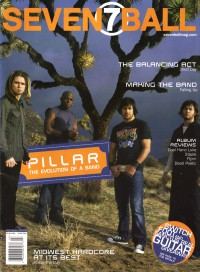
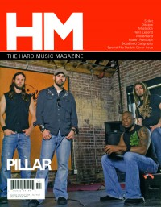

PillarOn the cover
May 2004
7ball |

November 2006
HM | Media coverage- Jul 2000 in 7ball "Somebody Sign These Guys: Pillar"
- Nov 2000 in HM "Hardnews: Pillar", by Amy Sondova
- Jan 2001 in 7ball "Pillar", by Kerry Maffeo
- May 2002 in HM "Rap Rock: The Ninth Inning: Pillar", by Jason E. Dodd
- Sep 2002 in CCM "Pillar Reacts To National Tragedy", by Stephanie Ottosen, Lizza Connor
- Jan 2003 in CCM "Rock Star 101: Rocking Steady", by Christina Farris
- Mar 2003 in 7ball "From The Road: Miles of Road In Pillar Country"
- May 2003 in HM "Hardnews: Signs to MCA"
- Jan 2004 in HM "Pillar", by John J. Thompson
- Jan 2004 in CCM "2004 Reader's Choice Awards: Pillar's On Fire"
- Jan 2004 in CCM "'x' Things You Probably Didn't Know About...: Pillar"
- Mar 2004 in CCM "The Verdict Is In: 'Rock & Roll Is Here To Stay'", by Anthony DeBarros
- May 2004 in HM "Where Do They Go From Here?", by Lee Haley
- May 2004 in 7ball "Giving The Wake-Up Call", by Chad Bonham
- Jul 2004 in CCM "Pillar On Fire", by Lucas W. Hendrickson
- Sep 2004 in Relevant "Spotlight: Pillar", by Steven Douglas Losey
- Jan 2005 in HM "Pillar Tour Journal", by Michael Wittig
- May 2005 in CCM "5 Questions With: Rob Beckley of Pillar", by Andrea Bailey Willits
- Jul 2005 in HM "Hardnews: Pillar", by Charlotta Van Pelt
- Mar 2006 in CCM "Standing Room Only: Where Do We Go From Here Tour", by Andy Argyrakis
- Oct 2006 in CCM "Pillar's Day of Reckoning", by John J. Thompson
- Nov 2006 in HM "Positive Headspace", by Doug Van Pelt
- Nov 2006 in Group "Culture: Ministry and Media: Pillar", by Bryan Belknap
- Jun 2007 in CCM "Ask Your Favorite Artist: Pillar"
- 2007 in Christian Rock Report "Interview: Pillar", by Laura C. Romesburg
- Jan 2008 in HM "Timeout... For Some Face Slapping", by Carey Womack
- Jan 2008 in HM "Poster: Pillar"
- Feb 2008 in CCM "Game On", by Chad Bonham
- Apr 2008 in CCM "Roots: Building Community In Cyberspace", by Johnston Moore
- May 2008 in Group "The Rip Out: Ministry and Media: Pillar", by Scott Firestone IV
- Jan 2009 in HM "Hardnews: Pillar, Michael Wittig"
- Sep 2009 in HM "Pillar Has A Lot To Fess Up To Lately", by Kelly Kettering
- Jan 2013 in HM "Pillar", by Sarah Brehm
Albums & reviews:1999: Metamorphosis
2000: Original Superman
2003: Broken Down: The EP 2004: Where Do We Go From Here 2006: Nothing Comes For Free EP
2008: For The Love of the Game 2015: One Love Revolution Award Summary (Nominations / Wins)
Dove Awards2002 Dove Awards- Hard Music Recorded Song: "Live For Him"
2003 Dove Awards- Hard Music Album: Fireproof
- Hard Music Recorded Song: "Fireproof"
2005 Dove Awards2009 Dove Awards2010 Dove Awards Grammy AwardsBooks about Pillar
- "Pillar" in The Encyclopedia of Contemporary Christian Music (Mark Allan Powell, 2002).
|